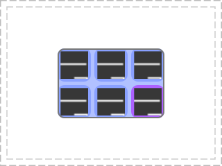

Class awful.widget.tasklist
Tasklist widget module for awful.
By default, the tasklist prepends some symbols in front of the client name. This is used to notify that the client has some specific properties that are currently enabled. This can be disabled using beautiful.tasklist_plain_task_name=true in the theme.
| Icon | Client property |
|---|---|
| ▪ | sticky |
| ⌃ | ontop |
| ▴ | above |
| ▾ | below |
| ✈ | floating |
| + | maximized |
| ⬌ | maximized_horizontal |
| ⬍ | maximized_vertical |
Customizing the tasklist:
The tasklist created by rc.lua use the default values for almost everything. However, it is possible to override each aspects to create a very different widget. Here’s an example that create a tasklist similar to the default one, but with an explicit layout and some spacing widgets:
s.mytasklist = awful.widget.tasklist {
screen = s,
filter = awful.widget.tasklist.filter.currenttags,
buttons = tasklist_buttons,
style = {
shape_border_width = 1,
shape_border_color = '#777777',
shape = gears.shape.rounded_bar,
},
layout = {
spacing = 10,
spacing_widget = {
{
forced_width = 5,
shape = gears.shape.circle,
widget = wibox.widget.separator
},
valign = 'center',
halign = 'center',
widget = wibox.container.place,
},
layout = wibox.layout.flex.horizontal
},
-- Notice that there is *NO* wibox.wibox prefix, it is a template,
-- not a widget instance.
widget_template = {
{
{
{
{
id = 'icon_role',
widget = wibox.widget.imagebox,
},
margins = 2,
widget = wibox.container.margin,
},
{
id = 'text_role',
widget = wibox.widget.textbox,
},
layout = wibox.layout.fixed.horizontal,
},
left = 10,
right = 10,
widget = wibox.container.margin
},
id = 'background_role',
widget = wibox.container.background,
},
}
As demonstrated in the example above, there are a few “shortcuts” to avoid
re-inventing the wheel. By setting the predefined roles as widget ids,
awful.widget.common will do most of the work to update the values
automatically. All of them are optional. The supported roles are:
icon_role: A wibox.widget.imageboxtext_role: A wibox.widget.textboxbackground_role: A wibox.container.backgroundtext_margin_role: A wibox.container.marginicon_margin_role: A wibox.container.margin
awful.widget.common also has 2 callbacks to give more control over the widget:
create_callback: Called once after the widget instance is createdupdate_callback: Called everytime the data is refreshed
Both callback have the same parameters:
self: The widget instance (widget).c: The client (client)index: The widget position in the list (number)clients: The list of client, in order (table)
It is also possible to omit some roles and create an icon only tasklist.
Notice that this example use the awful.widget.clienticon widget instead
of an imagebox. This allows higher resoluton icons to be loaded. This
example reproduces the Windows 10 tasklist look and feel:
s.mytasklist = awful.widget.tasklist {
screen = s,
filter = awful.widget.tasklist.filter.currenttags,
buttons = tasklist_buttons,
layout = {
spacing_widget = {
{
forced_width = 5,
forced_height = 24,
thickness = 1,
color = '#777777',
widget = wibox.widget.separator
},
valign = 'center',
halign = 'center',
widget = wibox.container.place,
},
spacing = 1,
layout = wibox.layout.fixed.horizontal
},
-- Notice that there is *NO* wibox.wibox prefix, it is a template,
-- not a widget instance.
widget_template = {
{
wibox.widget.base.make_widget(),
forced_height = 5,
id = 'background_role',
widget = wibox.container.background,
},
{
{
id = 'clienticon',
widget = awful.widget.clienticon,
},
margins = 5,
widget = wibox.container.margin
},
nil,
create_callback = function(self, c, index, objects) --luacheck: no unused args
self:get_children_by_id('clienticon')[1].client = c
end,
layout = wibox.layout.align.vertical,
},
}
The tasklist can also be created in an awful.popup in case there is no permanent awful.wibar:

awful.popup {
widget = awful.widget.tasklist {
screen = screen[1],
filter = awful.widget.tasklist.filter.allscreen,
buttons = tasklist_buttons,
style = {
shape = gears.shape.rounded_rect,
},
layout = {
spacing = 5,
forced_num_rows = 2,
layout = wibox.layout.grid.horizontal
},
widget_template = {
{
{
id = 'clienticon',
widget = awful.widget.clienticon,
},
margins = 4,
widget = wibox.container.margin,
},
id = 'background_role',
forced_width = 48,
forced_height = 48,
widget = wibox.container.background,
create_callback = function(self, c, index, objects) --luacheck: no unused
self:get_children_by_id('clienticon')[1].client = c
end,
},
},
border_color = '#777777',
border_width = 2,
ontop = true,
placement = awful.placement.centered,
shape = gears.shape.rounded_rect
}
Info:
- Copyright: 2008-2009 Julien Danjou
- Author: Julien Danjou <[email protected]>
Functions
| awful.tasklist (args, filter, buttons, style[, update_function[, base_widget]]) | Create a new tasklist widget. |
Theme variables
| beautiful.tasklist_fg_normal | The default foreground (text) color. |
| beautiful.tasklist_bg_normal | The default background color. |
| beautiful.tasklist_fg_focus | The focused client foreground (text) color. |
| beautiful.tasklist_bg_focus | The focused client background color. |
| beautiful.tasklist_fg_urgent | The urgent clients foreground (text) color. |
| beautiful.tasklist_bg_urgent | The urgent clients background color. |
| beautiful.tasklist_fg_minimize | The minimized clients foreground (text) color. |
| beautiful.tasklist_bg_minimize | The minimized clients background color. |
| beautiful.tasklist_bg_image_normal | The elements default background image. |
| beautiful.tasklist_bg_image_focus | The focused client background image. |
| beautiful.tasklist_bg_image_urgent | The urgent clients background image. |
| beautiful.tasklist_bg_image_minimize | The minimized clients background image. |
| beautiful.tasklist_disable_icon | Disable the tasklist client icons. |
| beautiful.tasklist_disable_task_name | Disable the tasklist client titles. |
| beautiful.tasklist_plain_task_name | Disable the extra tasklist client property notification icons. |
| beautiful.tasklist_font | The tasklist font. |
| beautiful.tasklist_align | The focused client alignment. |
| beautiful.tasklist_font_focus | The focused client title alignment. |
| beautiful.tasklist_font_minimized | The minimized clients font. |
| beautiful.tasklist_font_urgent | The urgent clients font. |
| beautiful.tasklist_spacing | The space between the tasklist elements. |
| beautiful.tasklist_shape | The default tasklist elements shape. |
| beautiful.tasklist_shape_border_width | The default tasklist elements border width. |
| beautiful.tasklist_shape_border_color | The default tasklist elements border color. |
| beautiful.tasklist_shape_focus | The focused client shape. |
| beautiful.tasklist_shape_border_width_focus | The focused client border width. |
| beautiful.tasklist_shape_border_color_focus | The focused client border color. |
| beautiful.tasklist_shape_minimized | The minimized clients shape. |
| beautiful.tasklist_shape_border_width_minimized | The minimized clients border width. |
| beautiful.tasklist_shape_border_color_minimized | The minimized clients border color. |
| beautiful.tasklist_shape_urgent | The urgent clients shape. |
| beautiful.tasklist_shape_border_width_urgent | The urgent clients border width. |
| beautiful.tasklist_shape_border_color_urgent | The urgent clients border color. |
List source functions
| awful.tasklist.source.all_clients | Get all the clients in an undefined order. |
List filters
| awful.tasklist.filter.allscreen | Filtering function to include all clients. |
| awful.tasklist.filter.alltags | Filtering function to include the clients from all tags on the screen. |
| awful.tasklist.filter.currenttags | Filtering function to include only the clients from currently selected tags. |
| awful.tasklist.filter.minimizedcurrenttags | Filtering function to include only the minimized clients from currently selected tags. |
| awful.tasklist.filter.focused | Filtering function to include only the currently focused client. |
Functions
Methods- awful.tasklist (args, filter, buttons, style[, update_function[, base_widget]])
-
Create a new tasklist widget.
The last two arguments (update_function
and layout) serve to customize the layout of the tasklist (eg. to
make it vertical). For that, you will need to copy the
awful.widget.common.list_update function, make your changes to it
and pass it as update_function here. Also change the layout if the
default is not what you want.
- args
- screen screen The screen to draw tasklist for.
- filter function Filter function to define what clients will be listed.
- buttons table A table with buttons binding to set.
- update_function function Function to create a tag widget on each update. See awful.widget.common.list_update. (optional)
- layout table Container widget for tag widgets. Default is wibox.layout.flex.horizontal. (optional)
- source function The function used to generate the list of client. (default awful.tasklist.source.all_clients)
- widget_template table A custom widget to be used for each client (optional)
- style table The style overrides default theme. (default {})
- style.fg_normal string or pattern (default nil)
- style.bg_normal string or pattern (default nil)
- style.fg_focus string or pattern (default nil)
- style.bg_focus string or pattern (default nil)
- style.fg_urgent string or pattern (default nil)
- style.bg_urgent string or pattern (default nil)
- style.fg_minimize string or pattern (default nil)
- style.bg_minimize string or pattern (default nil)
- style.bg_image_normal string (default nil)
- style.bg_image_focus string (default nil)
- style.bg_image_urgent string (default nil)
- style.bg_image_minimize string (default nil)
- style.tasklist_disable_icon boolean (default nil)
- style.disable_task_name boolean (default false)
- style.font string (default nil)
- style.align string left, right or center (default left)
- style.font_focus string (default nil)
- style.font_minimized string (default nil)
- style.font_urgent string (default nil)
- style.spacing number The spacing between tags. (default nil)
- style.shape gears.shape (default nil)
- style.shape_border_width number (default nil)
- style.shape_border_color string or color (default nil)
- style.shape_focus gears.shape (default nil)
- style.shape_border_width_focus number (default nil)
- style.shape_border_color_focus string or color (default nil)
- style.shape_minimized gears.shape (default nil)
- style.shape_border_width_minimized number (default nil)
- style.shape_border_color_minimized string or color (default nil)
- style.shape_urgent gears.shape (default nil)
- style.shape_border_width_urgent number (default nil)
- style.shape_border_color_urgent string or color (default nil)
- filter DEPRECATED use args.filter
- buttons DEPRECATED use args.buttons
- style DEPRECATED use args.style
- update_function DEPRECATED use args.update_function
- base_widget DEPRECATED use args.base_widget
- args
Theme variables
- beautiful.tasklist_fg_normal
-
The default foreground (text) color.
Type:
- fg_normal string or pattern (default nil)
See also:
- beautiful.tasklist_bg_normal
-
The default background color.
Type:
- bg_normal string or pattern (default nil)
See also:
- beautiful.tasklist_fg_focus
-
The focused client foreground (text) color.
Type:
- fg_focus string or pattern (default nil)
See also:
- beautiful.tasklist_bg_focus
-
The focused client background color.
Type:
- bg_focus string or pattern (default nil)
See also:
- beautiful.tasklist_fg_urgent
-
The urgent clients foreground (text) color.
Type:
- fg_urgent string or pattern (default nil)
See also:
- beautiful.tasklist_bg_urgent
-
The urgent clients background color.
Type:
- bg_urgent string or pattern (default nil)
See also:
- beautiful.tasklist_fg_minimize
-
The minimized clients foreground (text) color.
Type:
- fg_minimize string or pattern (default nil)
See also:
- beautiful.tasklist_bg_minimize
-
The minimized clients background color.
Type:
- bg_minimize string or pattern (default nil)
See also:
- beautiful.tasklist_bg_image_normal
-
The elements default background image.
Type:
- bg_image_normal string (default nil)
- beautiful.tasklist_bg_image_focus
-
The focused client background image.
Type:
- bg_image_focus string (default nil)
- beautiful.tasklist_bg_image_urgent
-
The urgent clients background image.
Type:
- bg_image_urgent string (default nil)
- beautiful.tasklist_bg_image_minimize
-
The minimized clients background image.
Type:
- bg_image_minimize string (default nil)
- beautiful.tasklist_disable_icon
-
Disable the tasklist client icons.
Type:
- tasklist_disable_icon boolean (default false)
- beautiful.tasklist_disable_task_name
-
Disable the tasklist client titles.
Type:
- tasklist_disable_task_name boolean (default false)
- beautiful.tasklist_plain_task_name
-
Disable the extra tasklist client property notification icons.
See the Status icons section for more details.
Type:
- tasklist_plain_task_name boolean (default false)
- beautiful.tasklist_font
-
The tasklist font.
Type:
- font string (default nil)
- beautiful.tasklist_align
-
The focused client alignment.
Type:
- align string left, right or center (default left)
- beautiful.tasklist_font_focus
-
The focused client title alignment.
Type:
- font_focus string (default nil)
- beautiful.tasklist_font_minimized
-
The minimized clients font.
Type:
- font_minimized string (default nil)
- beautiful.tasklist_font_urgent
-
The urgent clients font.
Type:
- font_urgent string (default nil)
- beautiful.tasklist_spacing
-
The space between the tasklist elements.
Type:
- spacing number The spacing between tasks. (default 0)
- beautiful.tasklist_shape
-
The default tasklist elements shape.
Type:
- shape gears.shape (default nil)
- beautiful.tasklist_shape_border_width
-
The default tasklist elements border width.
Type:
- shape_border_width number (default 0)
- beautiful.tasklist_shape_border_color
-
The default tasklist elements border color.
Type:
- shape_border_color string or color (default nil)
See also:
- beautiful.tasklist_shape_focus
-
The focused client shape.
Type:
- shape_focus gears.shape (default nil)
- beautiful.tasklist_shape_border_width_focus
-
The focused client border width.
Type:
- shape_border_width_focus number (default 0)
- beautiful.tasklist_shape_border_color_focus
-
The focused client border color.
Type:
- shape_border_color_focus string or color (default nil)
See also:
- beautiful.tasklist_shape_minimized
-
The minimized clients shape.
Type:
- shape_minimized gears.shape (default nil)
- beautiful.tasklist_shape_border_width_minimized
-
The minimized clients border width.
Type:
- shape_border_width_minimized number (default 0)
- beautiful.tasklist_shape_border_color_minimized
-
The minimized clients border color.
Type:
- shape_border_color_minimized string or color (default nil)
See also:
- beautiful.tasklist_shape_urgent
-
The urgent clients shape.
Type:
- shape_urgent gears.shape (default nil)
- beautiful.tasklist_shape_border_width_urgent
-
The urgent clients border width.
Type:
- shape_border_width_urgent number (default 0)
- beautiful.tasklist_shape_border_color_urgent
-
The urgent clients border color.
Type:
- shape_border_color_urgent string or color (default nil)
See also:
List source functions
- awful.tasklist.source.all_clients
-
Get all the clients in an undefined order.
This is the default source.
List filters
- awful.tasklist.filter.allscreen
- Filtering function to include all clients.
- awful.tasklist.filter.alltags
-
Filtering function to include the clients from all tags on the screen.
- c The client.
- screen The screen we are drawing on.
- awful.tasklist.filter.currenttags
-
Filtering function to include only the clients from currently selected tags.
- c The client.
- screen The screen we are drawing on.
- awful.tasklist.filter.minimizedcurrenttags
-
Filtering function to include only the minimized clients from currently selected tags.
- c The client.
- screen The screen we are drawing on.
- awful.tasklist.filter.focused
-
Filtering function to include only the currently focused client.
- c The client.
- screen The screen we are drawing on.